01
Saç Kesim & Şekillendirme
Yüzünüze ve stilinize uygun kesim, fön ve şekillendirme.
Ares Kuaför'de saç kesimi, renklendirme, bakım, özel gün hazırlığı ve mikro kaynak hizmetleriyle tarzınıza uygun salon deneyimi.
📍 Ahi Evran · Şehit Polis Köksal Demirci Cd. · Kırşehir
Yüzünüze ve stilinize uygun kesim, fön ve şekillendirme.
Boya, röfle, ombre ve kişiye özel renk çalışmaları.
Saçın ihtiyacına göre profesyonel bakım uygulamaları.
Uzunluk ve hacim isteyen saçlar için mikro kaynak uygulaması.
Düğün, nişan, davet ve özel gün hazırlıkları.
Bakımlı eller ve ayaklar için güzellik uygulamaları.
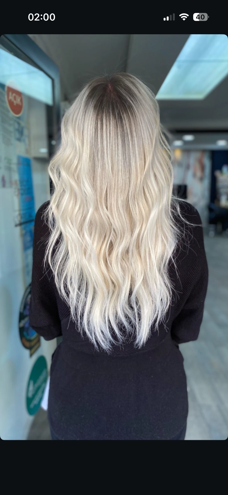
Işıltı & Dalga →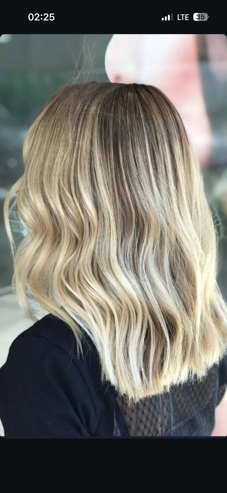
Dalgalı Saç →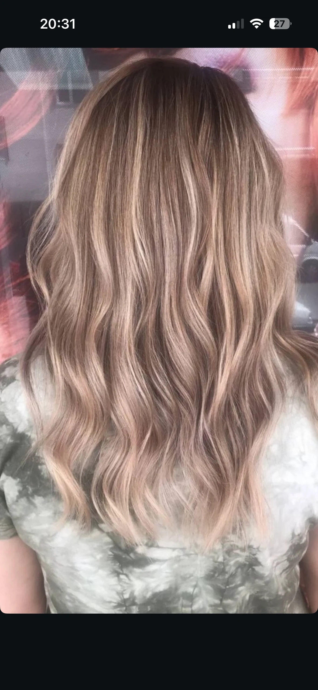
Sarı Tonlar →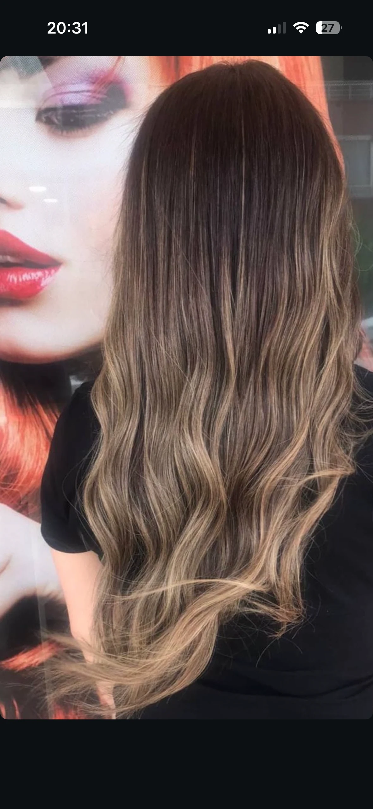
Pastel Tonlar →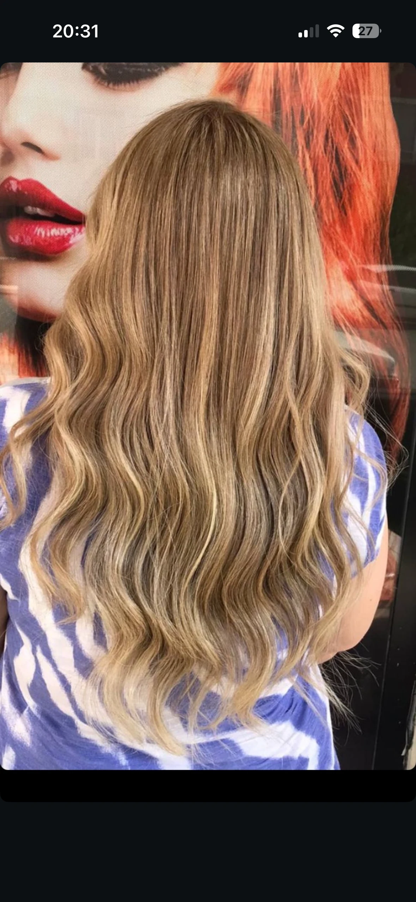
Uzun Saç →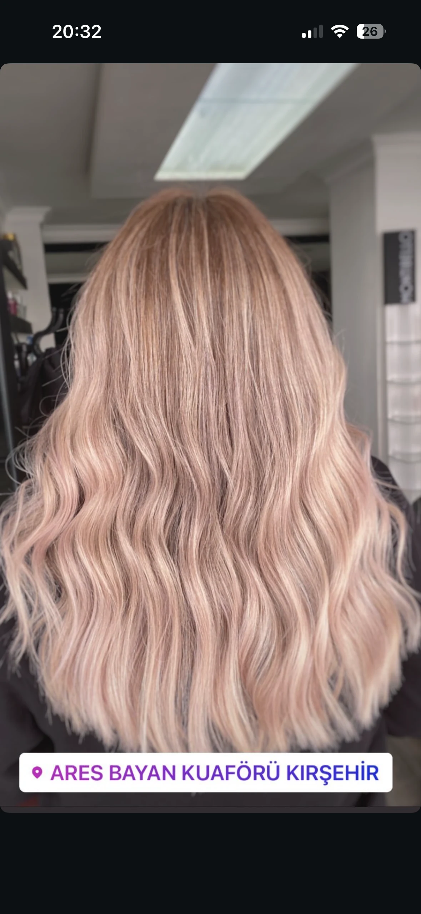
Renklendirme →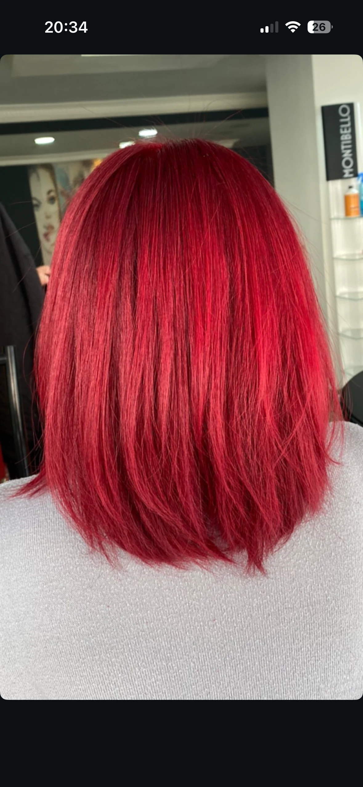
Özel Renk →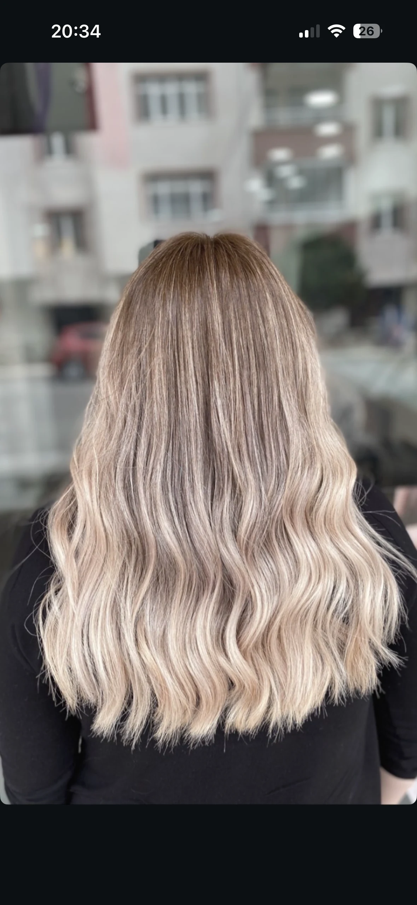
Canlı Renk →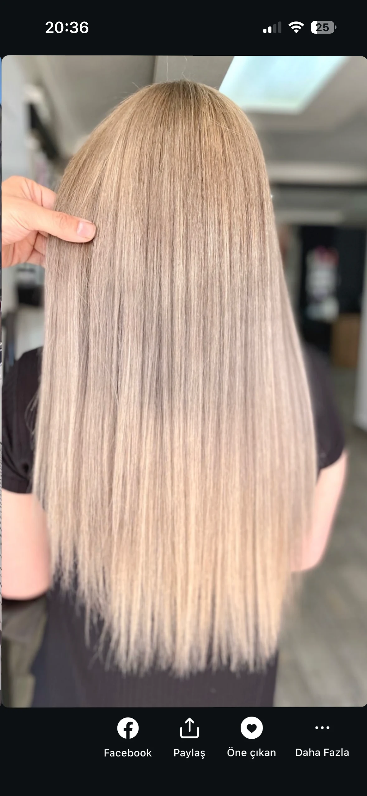
Dalga & Hacim →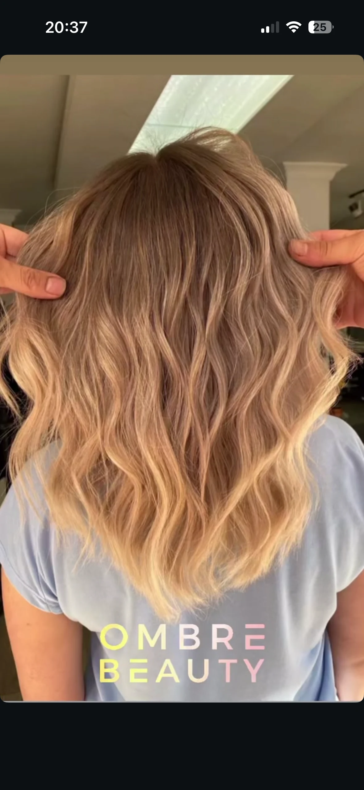
Saç Bakımı →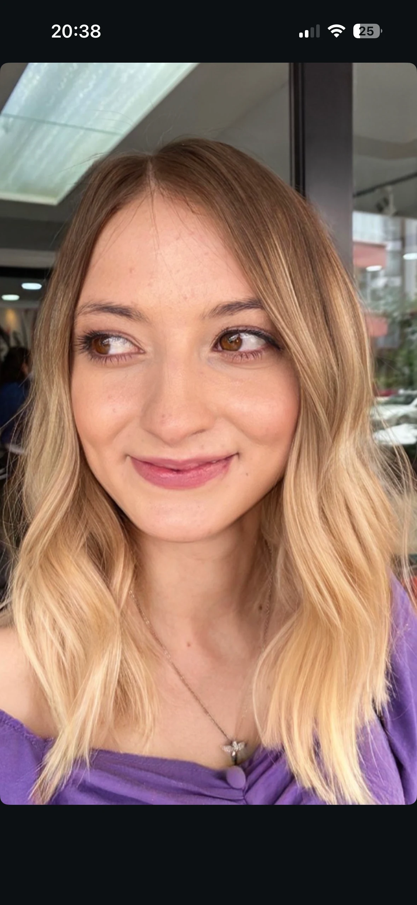
Ombre →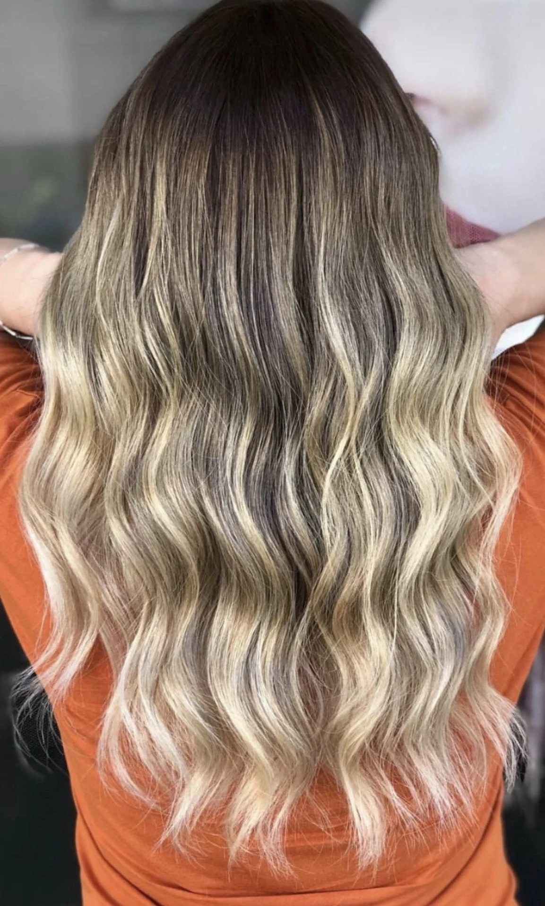
Yeni Görünüm →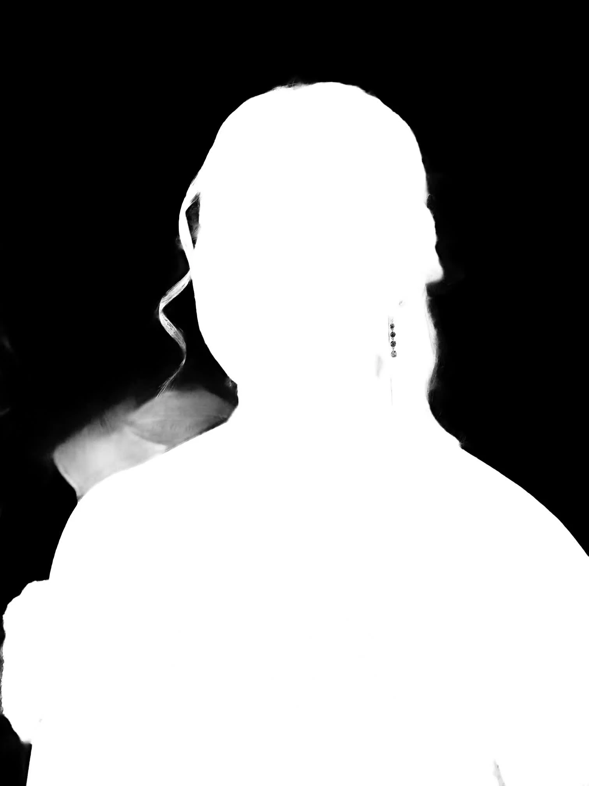
Salon Çalışması →Video çalışmalarımızı izleyebilirsiniz.
WhatsApp veya Instagram'dan bize ulaşabilirsiniz.
Ahi Evran Mahallesi, Şehit Polis Köksal Demirci Caddesi, Kırşehir
Google Maps'te Yol TarifiWhatsApp: 0553 129 33 38
Instagram: @areskuaforkirsehir
Pazartesi: 08:00 – 20:00
Salı: Kapalı
Çarşamba: 08:00 – 20:00
Perşembe: 08:00 – 20:00
Cuma: 08:00 – 20:00
Cumartesi: 08:00 – 20:00
Pazar: 08:00 – 20:00